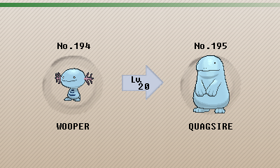
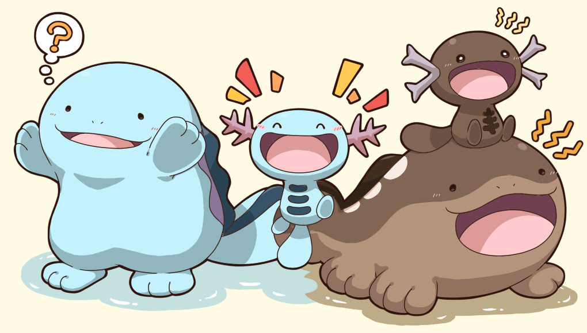

Sumário
Quem é o Quagsire?
#0195
Tipos
Água
Terrestre
Linha Evolutiva
Começa pelo Wooper, que evolui para Quagsire no nível 20

Diferenças entre Quagsire e Clodsire
Clodsire é a evolução da forma regional do Wooper, em Paldea (9ª geração), portanto ele e o Quagsire NÃO são o mesmo pokemon.
Entre suas principais diferenças, estão:
- Sua tipagem: Quagsire é tipo Água/Terrestre, enquanto o Clodsire é tipo Venenoso/Terrestre;
- Sua ocorrência: Quagsire é da região de Johto e Clodsire é de Paldea;
- Sua aparência: Quagsire é majoritariamente azul e anda sobre duas patas, já o Clodsire é marrom, quadrúpede e tem espinhos lilás nas costas.
